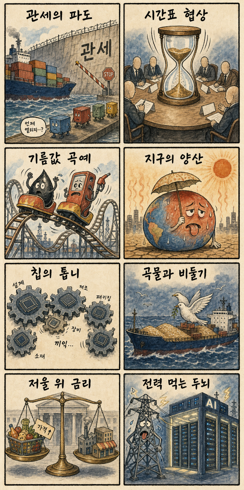
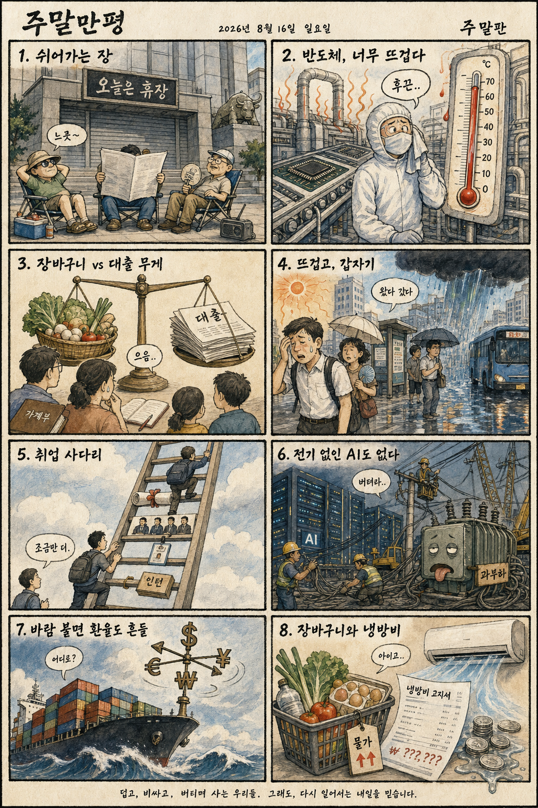

01
AMD · 487.60→514.39달러 · +5.49%
내용요약 반도체주가 혼조인 가운데 정규장 시가 대비 5.49% 상승하며 뚜렷한 상대강세를 보였습니다.
예상여파 국내 반도체 심리에 우호적이지만 KOSPI 대형 반도체는 연속 상승 뒤여서 다음 거래일 추격 손익비를 따로 봐야 합니다.
MORNING_BRIEFING_20260815
작성 시각: 2026-08-15 06:39 KST · 직전 미국 정규장과 2026-08-15 KST 당일 공개 기사 기준
직전 미국 정규장인 8월 14일에는 다우 -0.20%, S&P 500 -0.17%, 나스닥 -0.28%로 소폭 하락했습니다. 7월 소매판매 부진과 중동발 유가 상승 경계가 최근 랠리의 숨 고르기를 이끌었습니다. 한국 증시는 8월 15일 광복절이자 토요일로 휴장하며, 다음 거래일에는 KOSPI의 장중 7,000선 돌파 뒤 매물 소화와 미국 반도체주의 종목별 차별화가 핵심입니다.
| 지수 | 종가 | 등락률 | 한국 증시 영향 |
|---|---|---|---|
| 다우존스 | 53,732.41 | -0.20% | 경기민감주 숨 고르기 |
| S&P 500 | 7,785.76 | -0.17% | 위험선호 소폭 둔화 |
| 나스닥 종합 | 26,729.16 | -0.28% | 기술주 차별화 |
소매판매 부진과 유가 경계로 최근 랠리가 쉬어갔습니다.
14일 2.42% 상승했지만 시가 대비로는 0.25% 밀렸습니다.
광복절·토요일로 다음 거래일의 갭과 수급을 봅니다.
휴장일이며 확률·표본·손익비 문턱을 충족한 후보가 없습니다.
8월 14일 보고서는 연속 급등 뒤 과열과 수급·컨센서스·보정 표본·손익비 문턱을 동시에 검증하지 못해 공식 추천을 내지 않았습니다. 오늘 손익은 공식 추천 0건으로 계산 대상이 없으며 게시 당시 판단은 그대로 유지됩니다.
| 시장 | 종가 | 등락률 | 해석 |
|---|---|---|---|
| KOSPI | 6,977.94 | +2.42% | 5거래일 상승·장중 7,000 돌파 |
| KOSDAQ | 864.65 | +0.38% | 대형주 대비 제한 상승 |
| 다우존스 | 53,732.41 | -0.20% | 소매판매 부진 반영 |
| S&P 500 | 7,785.76 | -0.17% | 최근 상승 뒤 숨 고르기 |
| 나스닥 | 26,729.16 | -0.28% | 기술주 차별화 |
삼성전자 +2.43%, SK하이닉스 +3.26%로 지수 상승을 이끌었습니다.
정규장 시가 대비 +5.49%로 반도체 내 상대강세를 보였습니다.
크라우드스트라이크 -4.26%, 팔란티어 -3.05%로 시가 대비 약세였습니다.
KOSPI는 장중 기록을 세웠지만 시가 대비 -0.25%로 마감했습니다.
내용요약 반도체주가 혼조인 가운데 정규장 시가 대비 5.49% 상승하며 뚜렷한 상대강세를 보였습니다.
예상여파 국내 반도체 심리에 우호적이지만 KOSPI 대형 반도체는 연속 상승 뒤여서 다음 거래일 추격 손익비를 따로 봐야 합니다.
내용요약 미국 기술주가 약보합인 날 사이버보안주가 시가 대비 4% 넘게 하락했습니다.
예상여파 국내 보안·AI 소프트웨어 테마의 단기 심리를 누를 수 있어 수주와 실적이 확인되는 종목 중심의 선별이 중요합니다.
내용요약 최근 상승 피로와 성장주 차익실현 속에 시가 대비 3.05% 하락했습니다.
예상여파 국내 AI 소프트웨어 테마도 높은 밸류에이션과 수급 변동성에 민감해질 수 있습니다.
내용요약 AMD 강세와 달리 시가 대비 1.91% 하락해 반도체 업종 내부 차별화가 나타났습니다.
예상여파 미국 반도체 지수만으로 국내 공급망 전체를 같은 방향으로 해석하기보다 제품·고객별 실적을 구분해야 합니다.
내용요약 실적 전망 우려가 부각되며 전일 종가 대비 5% 넘게 하락했고 정규장 안에서는 저가 매수로 시가 대비 1.75% 반등했습니다.
예상여파 반도체 장비주의 수주 가시성과 다음 분기 전망에 대한 눈높이가 낮아지면 국내 장비·소재주에도 차별화 압력이 생길 수 있습니다.
오늘은 광복절이자 토요일로 KOSPI·KOSDAQ이 휴장합니다. 다음 거래일에는 미국 지수의 소폭 하락보다 KOSPI가 5거래일 연속 오른 뒤 장중 7,000선을 찍고 밀린 자체 수급이 더 중요합니다. 삼성전자와 SK하이닉스는 14일에도 각각 2.43%, 3.26% 상승했지만 KOSPI는 시가 대비 -0.25%, KOSDAQ은 -0.39%로 마감했습니다. 미국에서는 AMD가 강했으나 장비·보안·AI 소프트웨어가 약해 업종 전체 추격보다 외국인 현·선물 수급과 시초가 갭을 먼저 보는 편이 합리적입니다.
오늘은 추천 없음 — 현금 관망
국내 증시 휴장일이며 전일까지의 외국인·기관 수급, 컨센서스 변화, 30건 이상 유사 조건 확률 보정, 예상 손익비 1.5 이상을 동시에 검증해 종합점수 75점·상승확률 60% 문턱을 넘긴 후보가 없습니다. 휴장 중 미국 개별주 변동만으로 다음 거래일 상승확률을 만들지 않습니다.
관심 연결종목 메모리 반도체, AI 데이터센터 전력, 피지컬 AI 공급망은 관찰 대상일 뿐 매수 추천이 아닙니다. 다음 거래일 갭 상승 시 추격매수 금지입니다.
광복절·토요일로 다음 거래일 시초가 갭을 준비합니다.
장중 돌파 뒤 밀린 매물과 외국인 수급의 지속성을 봅니다.
시설 공격 주장 이후 원유 위험 프리미엄을 점검합니다.
연휴 교통·항공·물류와 시설 피해 위험을 살핍니다.
핵심 요약: AI 투자의 초점이 반도체를 넘어 전력·휴머노이드·국방 로봇으로 넓어지는 한편, 생성형 AI 시범사업의 수익성 검증은 더 엄격해지고 있습니다. 메모리 부족과 피지컬 AI 협력은 국내 공급망에 기회를 주지만 실적 없는 테마 추격은 구분해야 합니다.
내용요약 AI 투자 기회를 반도체에만 좁히지 말고 전력 인프라와 휴머노이드까지 함께 봐야 한다는 시장 분석입니다.
예상여파 AI 설비투자의 수혜 범위가 전력기기·로봇 부품으로 넓어질 수 있지만 실적과 수주를 동반하지 않은 테마 추격은 경계해야 합니다.
내용요약 빅테크의 AI 인프라 수요가 빠르게 늘면서 메모리 생산 확대에도 공급 부족이 이어지는 구조를 짚은 기사입니다.
예상여파 HBM과 서버 메모리 가격에는 우호적이지만 증설 속도와 범용 메모리 공급 전환이 향후 가격 변동성을 키울 수 있습니다.
내용요약 산업부·육군·현대차가 AI와 로봇을 국방 현장에 적용하기 위한 협력 양해각서를 맺었다는 소식입니다.
예상여파 경계·수색 자동화가 구체화되면 로봇·센서·통신 공급망의 실증 기회가 늘고 안전·책임 기준 정립도 빨라질 수 있습니다.
내용요약 LG와 엔비디아가 제조·로봇 AI 협력을 넓혀 내년 초 합작 휴머노이드 공개를 추진한다는 보도입니다.
예상여파 피지컬 AI 경쟁이 가속되면 로봇 구동부·센서·산업 소프트웨어 수요가 늘 수 있으나 양산성과 원가가 핵심 변수입니다.
내용요약 생성형 AI 시범사업의 다수가 수익성을 입증하지 못했다는 조사와 전사 확장 전 운영 점검 기준을 다룬 기사입니다.
예상여파 기업 AI 투자가 실험 단계에서 비용·보안·업무성과 중심으로 재편되며 검증 가능한 생산성 지표의 중요성이 커질 수 있습니다.
핵심 요약: 흑해 곡물 운송과 중동 에너지 시설의 긴장이 동시에 높아져 원자재·운송 위험이 다시 부각됐습니다. 미국의 드론 관세와 일본의 정보기관 논의는 공급망과 동북아 안보 체계의 재편을 재촉하고 있습니다.
내용요약 우크라이나가 흑해 곡물 운송과 관련한 휴전을 제안했지만 러시아의 흑해·다뉴브강 공격이 이틀째 이어졌다는 보도입니다.
예상여파 곡물 수출항 위험이 지속되면 해상보험료와 곡물 가격의 변동성이 커져 식품 물가에도 부담이 될 수 있습니다.
내용요약 미국이 드론에 최대 100% 관세를 적용하는 방안을 추진하면서 중국 관영 매체가 자국 기업의 타격을 전망했다는 기사입니다.
예상여파 드론 공급망의 미국 내 생산 전환이 빨라지고 부품 가격과 우회 조달 비용이 오를 수 있습니다.
내용요약 이스라엘 총리가 미국의 공개적 지지를 기대하는 가운데 미국 측의 침묵이 길어지는 외교 상황을 다룬 기사입니다.
예상여파 가자 문제를 둘러싼 미·이스라엘 조율이 흔들리면 중동 휴전 협상과 에너지 위험 프리미엄의 불확실성이 커질 수 있습니다.
내용요약 일본의 대외정보기관 창설 논의가 동북아 정보협력과 한국의 대응 체계에 던지는 과제를 분석한 기사입니다.
예상여파 일본의 정보 역량 강화는 한미일 안보 협력의 범위를 넓히는 동시에 정보 공유의 통제·신뢰 기준을 더 중요하게 만들 수 있습니다.
내용요약 예멘 후티가 사우디 아람코 시설을 이틀 연속 공격했다고 주장하며 중동 긴장이 높아졌다는 보도입니다.
예상여파 공급 차질 우려가 커지면 유가와 해상운송 보험료가 올라 항공·화학·물류 업종의 비용 부담으로 이어질 수 있습니다.

핵심 요약: KOSPI가 장중 7,000선을 처음 넘었지만 시가 대비 하락해 기록과 차익실현 압력이 함께 나타났습니다. AI 고용안전망 법안, 국방위성 발사체 연구, 새만금 무탄소 전력과 남부권 호우가 산업·정책·생활의 핵심 변수입니다.
내용요약 KOSPI가 8월 14일 2.42% 오른 6,977.94로 마감했고 장중 처음 7,000선을 넘었다는 시장 보도입니다.
예상여파 기록적 지수 상승은 투자심리에 우호적이지만 시가 대비로는 0.25% 하락해 7,000선 부근 차익실현 압력도 드러났습니다.
내용요약 AI 전환에 따른 고용 충격에 대응하기 위해 기업 분담금과 사회안전망을 담은 법안이 발의됐다는 보도입니다.
예상여파 AI 도입 비용과 고용 책임의 배분 논의가 본격화되며 기업의 자동화 투자와 노동 전환 지원 설계에 영향을 줄 수 있습니다.
내용요약 방위사업청이 국내 기술로 국방위성을 발사하기 위한 발사체 정책 연구에 착수했다는 기사입니다.
예상여파 독자 발사 역량이 구체화되면 우주·방산 공급망과 시험 인프라 투자가 늘 수 있지만 장기 일정과 예산 관리가 중요합니다.
내용요약 한국남동발전이 새만금에 국내 첫 무탄소 전력 생태계를 구축하는 사업을 추진한다는 소식입니다.
예상여파 산업단지의 안정적 저탄소 전력 공급이 구체화되면 데이터센터·첨단 제조 유치와 전력망 투자의 연계가 강화될 수 있습니다.
내용요약 광복절 연휴 첫날 남부와 제주에 많은 비가 예보됐고 경남 일부는 최대 200㎜가 전망됐다는 날씨 보도입니다.
예상여파 국지성 호우로 도로·항공·물류 지연과 산사태·침수 위험이 커질 수 있어 연휴 이동과 시설 점검이 필요합니다.
